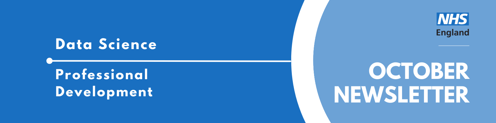

Data Science Community for Health and Care Newsletter October 2025

Welcome to the latest newsletter from the Data Science Community for Health and Care, brought to you by the NHS England Data Science Professional Development Functional Team.
The newsletter team are always happy to receive constructive feedback, and we invite you to send us any contributions you may have.
If you cannot access something of interest to you, please reach out.
Thanks for reading! – newsletter team
Interview with a Data Scientist - The RAP Guy
Welcome to another installment of our “Interview with a Data Scientist” series, where we explore the careers and work of the talented members of the NHS England Data Science team. We aim to showcase the fantastic individuals who contribute to the NHSE Data Science Profession and provide valuable insights for those considering a career in Data Science within the healthcare sector.
This week our interviewee is Sam Hollings, who is departing NHS England after a seven-year career. In his most recent role as Head of Coding and Data Standards (and formerly as Principal Data Scientist), Sam was a driving force for improving data practices across the organisation. He is widely known for his passionate championing of Reproducible Analytical Pipelines (RAP). As he prepares for a new chapter in Italy with his family, he kindly agreed to share his reflections and the lessons learned from his work.
Read more…
How did you end up in data science at the NHS? What did you do before, and what really sparked your interest in this field?
I kind of ended up in data science by accident, though each part of my career has related to data, and usually making sense of large quantities of data!
My degree was in Physics and Astronomy, with the final project on hydrodynamic simulations of galaxies and analysing their outputs. This involved a bunch of big data analysis (in Python), but back in 2011 it was the early days of what we now call data science, so I didn’t know this term. I did do some clustering and regression though!
I further professionalised my data skills as a Band 5 in the NHS Information Centre and, crucially, built up my knowledge about NHS secondary care data and the structure of the NHS. Changing to the PhD for the next four years probably wasn’t the wisest choice career-wise, but I wanted to do some work nearer patients. Working in a hospital and picking up bone samples actually taken from patients was really interesting. Again, I also further developed my big data skills through my genomics work and the clustering I did to make sense of the 50,000 genes I measured.
When I came back to the NHSIC (now called the HSCIC, which later became NHS Digital), I built up my programming skills in the data engineering team, but had started to develop a plan to move into the exciting and growing field of data science. I did a bunch of personal study and projects, and then when I got made redundant, I saw my chance. Through the internal process to find me a new job, I got reallocated to the data science team in London! I was really excited by this, as the NHS has some incredibly rich (and huge) patient data, and the chance to apply these new and developing techniques for the benefit of patients and the public was too good to pass up!
Once you joined the NHS, what was that experience like? What different roles and teams have you been a part of, and how have they shaped your career?
I’ve worked on and off for the NHS since 2011, with a break between late 2013 and late 2018 where I did my PhD (Doctor of Philosophy) - though I also worked in a hospital during that time, St James’s in Leeds.
Though my degree was in Astronomy, in the final year I started to take a real interest in health and aspired to be a Medical Physicist. I did a few work experience placements in Radiology and Medical Physics departments. I didn’t get onto the scientist training programme unfortunately, so the first proper job I got after uni was at “the NHS Information Centre” (NHSIC) as a Band 5 Data Engineer (though back then they were called “Information Analysts”, oddly) in the reference data team. I’ll be honest, I kind of blagged my interview as my SQL knowledge was not great (they didn’t care about Python!), but I was a quick learner and soon was helping contribute and improve things. Automating the processes that brought reference data files into a corporate database wasn’t glamorous, but it was impactful, and I learnt so much about production products, working with people who felt you were threatening their job, and crucially, helping them see the opportunities this type of automation can bring. I got promoted to Band 6 after one year, then after another year I felt the itch to return to academia, so I embarked on my PhD.
I did a four-year Doctoral Training Centre (DTC) in Tissue Engineering and Regenerative Medicine, eventually focussing on studying how doping a type of bioactive glass-ceramic with Strontium made it “osteoinductive”. I did do proper cell biology work in a lab (and got to see a whole room of sawn-in-half cadavers), but the part I enjoyed most was the big data analysis of the genomics experiments I did, and again, helping my biology colleagues write programmes to automate some of their repetitive image processing.
At the end of the PhD I was a bit burnt out from research, so I came back to my old team as a Band 7 Data Engineer in the NHSIC (now called the HSCIC, which later became NHS Digital) where Python was now in vogue. I really learnt a lot about how to programme professionally - code version control, tests, pulling data down from Application Programming Interfaces (APIs), dev, test, live, the works! I then got made redundant, and through the internal process to find me a new job I got reallocated to the data science team in London!
Over the next five years, I established myself as a data scientist, getting promoted to Band 8a and working on a number of different projects - COVID patient forecasting, helping set up the Trusted Research Environment (TRE) - I was the original TRE Data Wrangler in the business! - and spending almost three years spreading Reproducible Analytical Pipelines (RAP) alongside a great number of incredible colleagues.
The final chapter of my career here was moving to Data Architecture where I continued the legacy of the RAP work, establishing coding and data standards in the business.
What are you currently working on? Are there any projects that you’re particularly excited about, or that you feel are making a real difference? What impact are you having?
My current work in the Data Architecture team has been mostly about establishing a reusable code library within the business and beyond, with the intention of it being public. You can see our prototype here! Many people in the business write the same old code… like how there are 20-something different algorithms for NHS number validation. We just need ONE - agreed, made to a high standard, signed off, and easy to consume. Alongside this, I’ve been working with others to clarify open sourcing, code documentation, code metadata, and reusable code standards, so it’s easier for our colleagues to adopt best practice.
Alongside this, I’ve led the work on establishing some Data Principles for NHS England. These are basic statements, often quite obvious, that act as a guiding light for how we use data. Ours are not published yet, but a great example is the data principles released by the ONS.
I also spent a while doing work on LLMs and other AI tools, including going to work for Downing Street for two months on an AI taskforce building a RAG-based tool for the Deputy Prime Minister. I tried to bring this learning back and share it with our colleagues through this interactive notebook: LLM Tutorial.
Probably the project I’m most well known for is “Reproducible Analytical Pipelines” (RAP). I really rode on the coat-tails of others, with colleagues such as Connor Quinn and Helen Richardson really getting it going in NHS Digital. My team and I focussed on helping people and making RAP interesting and fun, such as by having Christmas-themed sets of posts about RAP, and by challenging ourselves to mention it in nearly every meeting, including All Hands Calls! We trained a number of teams, who themselves went on to train others, so probably hundreds of analysts benefited from our work, and this isn’t even counting the teams from other organisations in London, Canada, France, and elsewhere who adopted our guidance! This work was really rewarding as it genuinely helped our colleagues. We managed to help colleagues reduce some pieces of work that took two people two weeks to run, to only take one person 40 minutes! We also tracked the success of the programme by measuring how many teams had reached baseline, silver, and gold RAP, and tracking how this changed each month, focussing our efforts on where people were getting stuck.
In terms of communication, I’m a big fan of using humour to make even the driest subject interesting. You have to use it sparingly, but when used at the right point, it can really help you hammer home the points you’re trying to make. I also use a lot of metaphors, describing technical things in terms of chocolate bars, cakes, vehicles - anything which allows me to get the core idea across in a way people can understand, and that feels real to them.
October Analyst X Data Science Huddle
Recently, the Data Science Community for Health and Care was invited to present at an AnalystX Huddle. We introduced who we are and various projects from our collaborators, NHS England Data Science and Applied AI Team, NHS Business Service Authority Data Science Team and the Department of Health and Social Care Data Science Team.
It was an excellent opportunity for us to showcase the amazing and varied work happening in the data science space across the health care system. We hope those who attended found it interesting, and we wanted to thank the AnalystX team for giving us the opportunity to present.
Missed the session? Check out the recording and PowerPoint slides here, where you will also find the recordings of previous huddles.
November Analyst X Data Science Huddle
18th November 2025, 13:00 - 14:00, Online
The Data Science Community for Health and Care have organised the next AnalystX Data Science Huddle for November! The session will contain two talks:
- Geospatial Analysis to Optimise Diagnostic Capacity Across the NHS South West Region.
- Using Simulation to Enhance Decision-Making in Talking Therapies Pathways.
Want a read of the abstracts? This event has been added to our Data Science Community for Health and Care calendar, where you will find the calendar invite to access the event and further information.
If you would like to be invited to future events of ours, sign up to our mailing list!
Events
Lots of exciting things coming up! See the full calendar here, and a small selection below.
The Health Foundation: Driving better health through English devolution
Wednesday 5th November, 10:00 - 16:00, Aspire Leeds, 2 Infirmary St, Leeds LS1 2JP
Regional government holds a range of powers and responsibilities that have the potential to improve people’s health. These include action on employment, the environment, housing, transport, and the economy. The government’s devolution agenda presents a vital opportunity for both newly established and existing Strategic Authorities to consider how they can maximize these powers to improve the health of their populations and reduce health inequalities.
This free one-day conference will be led by the Health Foundation, with support from the Mayoral Regions Programme (run on behalf of 10 Mayoral Strategic Authorities by the West Midlands Combined Authority). It will bring together colleagues from Strategic Authorities and their partners from across England to explore how regional leadership can drive better health outcomes.
The event will provide an opportunity to discuss embedding health in all policies in Mayoral Regions, working in partnership to improve health, and delivering local growth for health. We will explore examples of good practice, highlight opportunities and challenges, and offer space to learn from peers.
ONS Local Workshop: Building interactive onboarding tutorials in Power BI
Thursday 6th November, 09:30 - 11:00, Online
Birmingham City Council have developed and run the Birmingham City Observatory, a public, open data platform on a wide range of characteristics of the city. Danny O’Neill, its creator, is an expert on building Power BI dashboards.
Want your Power BI reports to guide users, not just display data? In this hands-on session, we’ll explore how to create interactive onboarding tutorials right inside your reports using layers, bookmarks, and clever design tricks. Whether you’re introducing new dashboards or making complex reports more user-friendly, you’ll learn practical ways to build guided experiences that actually stick.
Perfect for Power BI developers, analysts, and anyone who wants their reports to speak for themselves.
This event is free and open to all; however, we anticipate it will be of most interest to anyone working with Power BI dashboards to analyse data.
Privacy is Power - Data Ethics and Society Reading Group
Tuesday 11th November, 12:00 - 13:00, Online
Wednesday 26th November, 13:00 - 14:00, Online
Join us at the Data Ethics & Society Reading Group to discuss Privacy is Power by Carissa Véliz.
“Digital technology is stealing our personal data and with it our power to make free choices. To reclaim that power and democracy, we must protect our privacy. Short, terrifying, practical: Privacy is Power highlights the implications of our laid-back attitude to data and sets out how we can take back control.”
We will be holding two sessions over two weeks. The sessions will each focus on a different section of the book- but if you can’t make the one you want to come to, we can still guarantee a great conversation! Read more about our changes in our recent Data in Government blog post.
- Tue 11 Nov 2025 12 PM - 1 PM (focusing on the first half of the book; the dangers the data economy poses and why we should care)
- Wed 26 Nov 2025 1 PM - 2 PM (focusing on the second half of the book; what can we do about it, and whose responsibility is it?)
The event is free, but you need to sign up to reserve your spot. Signups for the first session will close on Monday 3rd November at 6pm. Signups for the second session close on Tuesday 18th November at 6pm.
BridgeAI Adopters and Developers event
Thursday 13th November, 09:00 - 17:30, Wallacespace, London,
Join us for an exclusive in-person networking event designed to unite AI adopters, developers, and experts to accelerate innovation and responsible AI adoption across UK sectors.
Hosted by The Alan Turing Institute, this event offers a unique opportunity to connect with SMEs from across the BridgeAI ecosystem. As AI adoption continues to reshape industries, this event offers an in-person space to explore collaborative opportunities, learn from peers, and access expert support tailored to your sector.
Whether you’re building AI tools or implementing them in your business, this event is your gateway to deeper engagement, practical insights, and valuable partnerships.
Event spaces are limited. Apply today to be considered for attendance, curated networking, and the BridgeAI PitchFest. This event is free.
ONS Local Workshop: Using R to wrangle data from web to output
Thursday 27th November, 09:15 - 10:30, Online
Dr. Dan Olner is a Y-PERN policy fellow and spatial economic data nerd based in the School of Management at Sheffield University.
In this session, we’ll work through some examples of using R to extract data directly from web sources (like NOMIS and online Excel sheets) and create pipelines through to final outputs. Automating as many of the steps as possible can be a huge help for quickly replicating and sharing analysis, and updating quickly when new data is published (though we’ll also discuss how to deal with inevitable format changes). Common ONS economic datasets will be used. Some familiarity with R will be useful, though you should be able to run all code without. If you want a quick R primer prior to the session, see Dan’s previous ‘R for economic data’ taster session (linked on the event webpage).
This free workshop is open to everyone, but will be particularly suited to data analysts who are responsible for creating, maintaining and developing dashboards and other data outputs for local authorities.
See more future events on the calendar
Know of any events we should feature next month? Let us know by clicking the “Contribute” button, or here.
Check out our collection of training resources in the Resources Section! Can you spot something missing? Contact us!